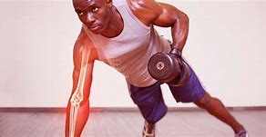

Porque realizar actividad?
La práctica regular de actividad física y deporte es esencial para mantener un estado de salud óptimo en diversas dimensiones. A continuación, se proporciona información más detallada sobre la importancia del deporte:
Salud Cardiovascular
Fortalecimiento del Corazón:El ejercicio cardiovascular, como correr o nadar, fortalece el corazón, mejorando su capacidad para bombear sangre de manera eficiente.
Reducción de la Presión Arterial:La actividad física regular contribuye a mantener niveles saludables de presión arterial, reduciendo el riesgo de enfermedades cardiovasculares.
Control del Peso y Composición Corporal:
Quema de Calorías:La práctica deportiva ayuda a quemar calorías, siendo crucial para el control del peso y la composición corporal.
Desarrollo Muscular:Diversos deportes contribuyen al desarrollo de masa muscular magra, mejorando la fuerza y la resistencia.
Salud Muscular y Ósea
Fortalecimiento Muscular:El deporte estimula el crecimiento y la fortaleza de los músculos, mejorando la función musculoesquelética.
Densidad Òsea: Actividades con carga, como el levantamiento de pesas, promueven una mayor densidad ósea, reduciendo el riesgo de osteoporosis.
Flexibilidad, Coordinación y Equilibrio
Mejora la flexibilidad: Deportes como el yoga y la gimnasia mejoran la flexibilidad, reduciendo la rigidez muscular y el riesgo de lesiones.
Desarrollo de la Coordinación y Equilibrio
Respuesta al Estrés y Salud Mental
Liberación de Endorfinas:La actividad física desencadena la liberación de endorfinas, neurotransmisores que actúan como analgésicos naturales y generan una sensación de bienestar.
Reducción del Estrés y Ansiedad: La participación en deportes está asociada con una menor incidencia de estrés y ansiedad, mejorando la salud mental.
Beneficios Cognitivos
Estímulo Cognitivo:La actividad física regular se vincula a un mejor rendimiento cognitivo, incluida la memoria, la concentración y la función ejecutiva.
Socialización y Desarrollo Personal
Integración Social:La participación en deportes fomenta la socialización, creando vínculos sociales y promoviendo un sentido de pertenencia.
Desarrollo de Habilidades Personales: La disciplina, la perseverancia y el trabajo en equipo son habilidades valiosas desarrolladas a través del deporte.
Prevención de Enfermedades Crónicas
Reducción del Riesgo de Enfermedades: La actividad física regular disminuye el riesgo de enfermedades crónicas, como diabetes tipo 2, enfermedades cardíacas y algunos tipos de cáncer.
Hábitos de Vida Saludable
Promoción de Hábitos Salubales: La práctica deportiva a menudo se asocia con la adopción de un estilo de vida saludable, incluida una dieta equilibrada y la evitación de comportamientos nocivos.
Gestión del Tiempo y Productividad
Mejora la Gestión del Tiempo: La organización de horarios para la práctica deportiva contribuye a una mejor gestión del tiempo y a una mayor productividad en otras áreas de la vida.
En resumen, la importancia del deporte es multifacética, impactando positivamente en la salud física, mental y social. La incorporación de la actividad física regular no solo mejora el bienestar individual, sino que también promueve un estilo de vida activo y equilibrado.
Beneficios del Deporte

Con el paso de los años, seguir practicando ejercicio disminuye la pérdida de densidad ósea relacionada con la edad. Hacer actividades de fortalecimiento muscular permite aumentar o mantener la masa muscular.
El ejercicio puede ayudarte a conciliar el sueño con más rapidez y a permanecer dormido más tiempo. Antes de tomar cualquier tipo de medicamento para dormir prueba con realizar actividad física, una práctica más saludable.

Para los adultos más mayores, las actividades de equilibrio y de fortalecimiento muscular, además de la actividad aeróbica moderada, reducen el riesgo de caídas.